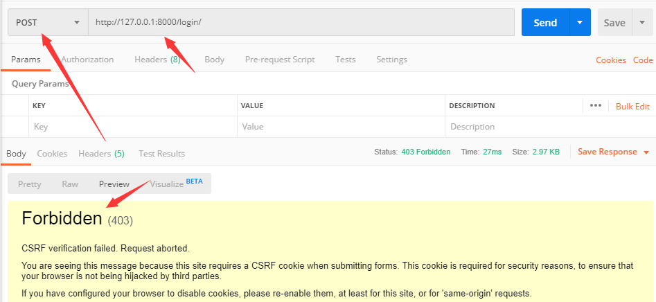

CBV中解决csrf认证的问题
CSRF（cross site request forgery）跨站请求伪造
具体是利用什么攻击的可以看看百度百科：csrf百科
防御：服务器给客户端发送一个随机的字符串，客户端和服务器交互的时候需要带上这个字符串，否则就是违法的用户，因为每次字符串都是随机的，从而避免了黑客利用的风险。
django是防御csrf的？
django默认全局开启csrf认证，只要是post请求就必须带上csrf的字符串。
在setting.py中设置中间件。django.middleware.csrf.CsrfViewMiddleware
MIDDLEWARE = [
'django.middleware.security.SecurityMiddleware',
'django.contrib.sessions.middleware.SessionMiddleware',
'django.middleware.common.CommonMiddleware',
'django.middleware.csrf.CsrfViewMiddleware', # 全局开启
'django.contrib.auth.middleware.AuthenticationMiddleware',
'django.contrib.messages.middleware.MessageMiddleware',
'django.middleware.clickjacking.XFrameOptionsMiddleware',
]
也可以把中间件注释掉，就全局关闭了，但是存在被利用漏洞的风险。
开启csrf验证发送post未带随机字符串

ajax提交post请求
- 在网页中任意一个位置增加 {% csrf_token %}
在模板中增加了 {% csrf_token %} 后，前端模板中会生成一个input标签。就是下面这样
html
<input type="hidden" name="csrfmiddlewaretoken" value="YcT8OPwJxCzwyspr0zDeoU6jSBv65EbhT5oBf2LMV603Qs2joTROB6YIlHvV6E4K">
- 在ajax post请求中提交参数时，需要将csrf的键和值也提交给服务器。
把随机字符串设置到请求头里。jquery示例。
js
var csrftoken = $('input[name=csrfmiddlewaretoken]').attr('value');
xhr.setRequestHeader("X-CSRFtoken", csrftoken);
全局开启了，怎么让单个视图函数不开启csrf保护呢？
装饰器
# 关闭csrf保护
from django.views.decorators.csrf import csrf_exempt
# 开启csrf保护
from django.views.decorators.csrf import csrf_protect
FBV
只需要在需要开启/关闭的函数上使用装饰器。
CBV
需要借助method_decorator装饰器
from django.utils.decorators import method_decorator
- 方式一：在dispatch方法上使用装饰器
```python from django.views.decorators.csrf import csrf_exempt, csrf_protect from django.utils.decorators import method_decorator
class StutentsView(View): method_descrator(csrf_exempt) def dispatch(csrf_exempt): return super(StudentsView, self).dispatch(request, args, *kwargs)
def get(self, request, *args, **kwargs):
return HttpResponse('GET')
```
- 方式二：在类上使用装饰器
```python from django.views.decorators.csrf import csrf_exempt, csrf_protect from django.utils.decorators import method_decorator
@method_decorator(csrf_exempt, name="dispatch") class StutentsView(View): def get(self, request, args, *kwargs): return HttpResponse('GET') ```